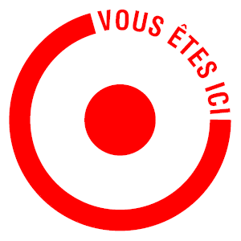

Thomas Lenormant
/
Étudiant en deuxième année d'école de commerce
<
Ce site web
Original
J'ai voulu me démarquer en faisant un CV sous forme web, d'une part car cela me permet d'avoir un support de CV en plus que d'autres et surtout cela permet de démontrer mes compétences de base en développement web.
HTML / CSS
Ce site a été fait entièrement en vanilla en HTML / CSS. Je me suis basé sur les cours gratuits d'OpenClassroom ainsi que des cours fournis dans une formation python que je suis entrain de suivre.
Pour le design du site je me suis inspiré de différents sites CV en ligne afin d'en faire un qui me corresponde au mieux.
J'ai choisi d'utiliser des couleurs pastel pour le coloris du site car ce sont des couleurs douces en général (bleu et beige) et est capable de quand même faire des séparations claires (jaune).
LE RESPONSIVE
La plus grande difficulté du site web est, et de loin le responsive. C'est l'adaptabilité du site vis-à-vis des différentes tailles d'écran des utilisateurs.
La prochaine difficulté à laquelle je vais devoir faire face est son adaptabilité aux différents naviguateurs utilisés, actuellement le site est optimisé pour Google Chrome et Mozilla mais pas pour Safari.